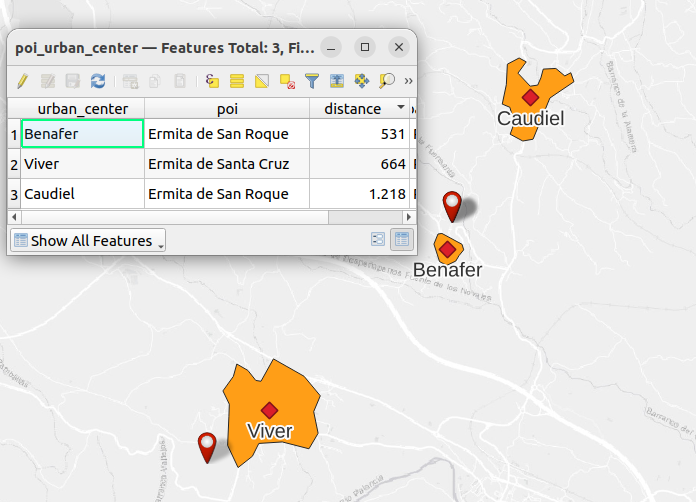
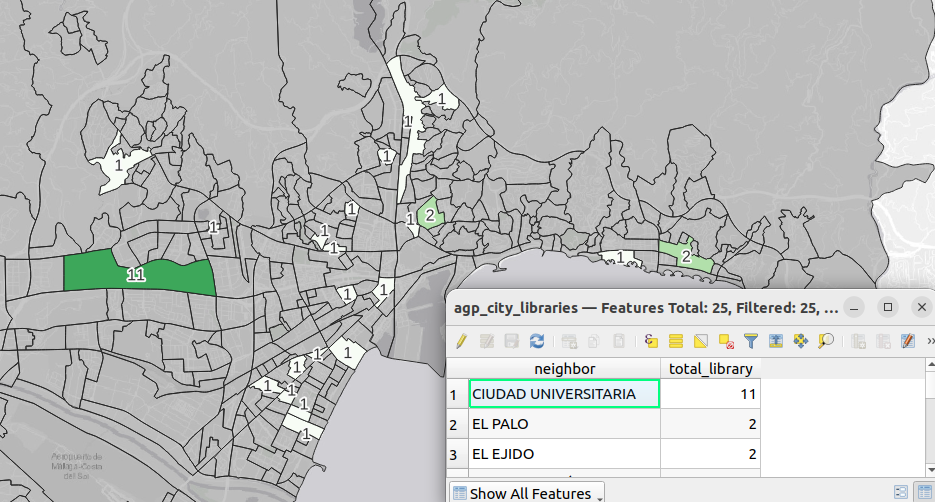
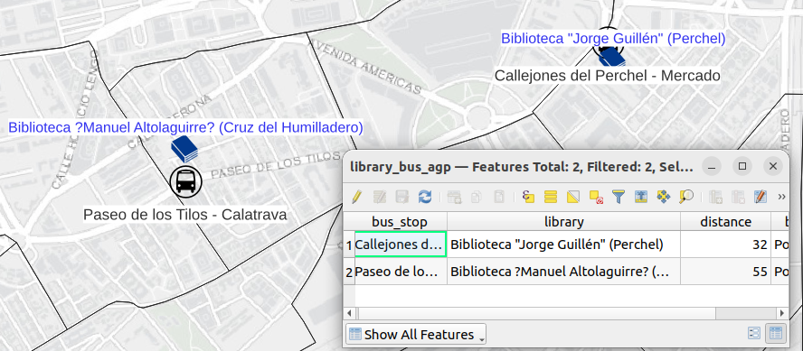

CREATE TABLE poi_comarca_count AS
WITH poi_comarca AS (SELECT
"ETIQUETA" AS poi,
"TIPO_0504" AS poi_type,
"PRIMARYIND" AS id,
c.comarca,
p.geom AS poi_geom,
c.geom AS comarca_geom
FROM
poi_castellon AS p
LEFT JOIN
castellon_comarcas_pop_2017 AS c
ON st_intersects(p.geom, st_transform(c.geom,25830)))
SELECT
comarca,
count(*) AS count_poi,
poi_comarca.comarca_geom
FROM
poi_comarca
GROUP BY comarca,poi_comarca.comarca_geom;Groupping POI by regions in PostgreSQL: Castellon’s POI by regions
Transform
PostGIS-QGIS
TYC GIS-IMFE
Exercise 3: JOINS
The exercise 3 requires to:
- Calculate the total number of point of interest (POI) for each region.

- Indicate which is the closest POI to each urban center.

Layers to be used:
- Nucleos_castellon.shp (urban centers)
- Lugares_interes_castellon.shp (POI)
- MUNICIPIOS.shp. (municipalities)
PostGIS
Total number of points of interest (POI) per region
Closest POI for each urban center.
CREATE TABLE poi_urban_center AS
SELECT DISTINCT ON (urban_center)
uc."ETIQUETA" AS urban_center,
poi.poi,
round(st_centroid(uc.geom) <-> poi.poi_geom) AS distance,
st_centroid(uc.geom) as urban_center_geom,
poi.poi_geom AS poi_geom
FROM
urbancenter_castellon uc
LEFT JOIN LATERAL
(SELECT
"ETIQUETA" AS poi,
geom AS poi_geom
FROM poi_castellon poi
ORDER BY poi.geom <-> st_centroid(uc.geom)
LIMIT 1) AS poi ON true;QGIS
Total number of points of interest (POI) per region
Closest POI for each urban center.
For Imfe
For this case, it is the council of the city center of Málaga which provides the data.
The layers used are:
Total number of points of interest (POI) per region
CREATE TABLE agp_city_libraries AS
SELECT
n."NOMBARRIO" AS neighbor,
count(l.id) AS total_library,
n.geom AS geom_neighbor
FROM agp_city_library AS l
JOIN agp_city_neighbor AS n
ON st_intersects(l.geom, n.geom)
GROUP BY "NOMBARRIO", n.geom
ORDER BY total_library DESC;
Closest POI for each urban center.
CREATE TABLE library_bus_agp AS
WITH agp_geom_bus AS
(SELECT
*,
st_transform(
st_setsrid(
st_point(lon::double precision, lat::double precision),4326),25830) AS geom
FROM agp_city_bus)
SELECT DISTINCT ON (l."NOMBRE")
bs."nombreParada" AS bus_stop,
l."NOMBRE" AS library,
round(l.geom <-> bs.geom) AS distance,
l.geom AS library_geom,
bs.geom AS bus_geom
FROM agp_city_library AS l
LEFT JOIN LATERAL
(SELECT
*
FROM agp_geom_bus AS b
ORDER BY b.geom <-> l.geom
LIMIT 1) AS bs ON true;